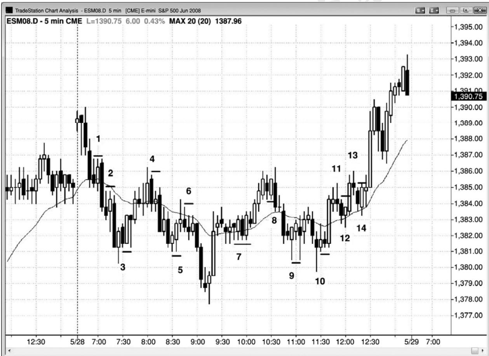
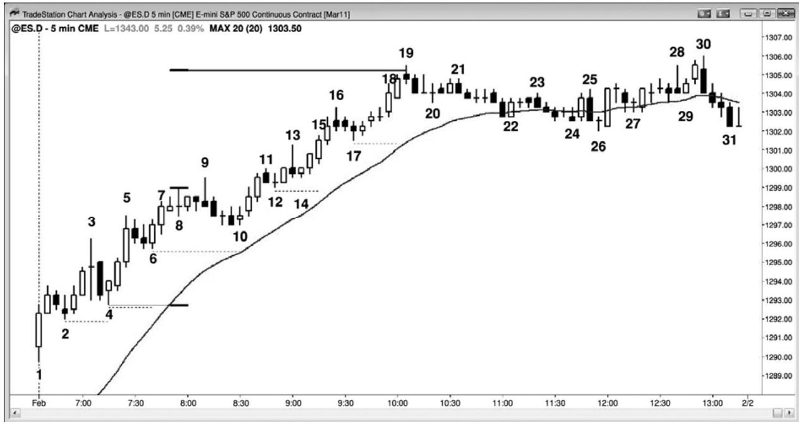
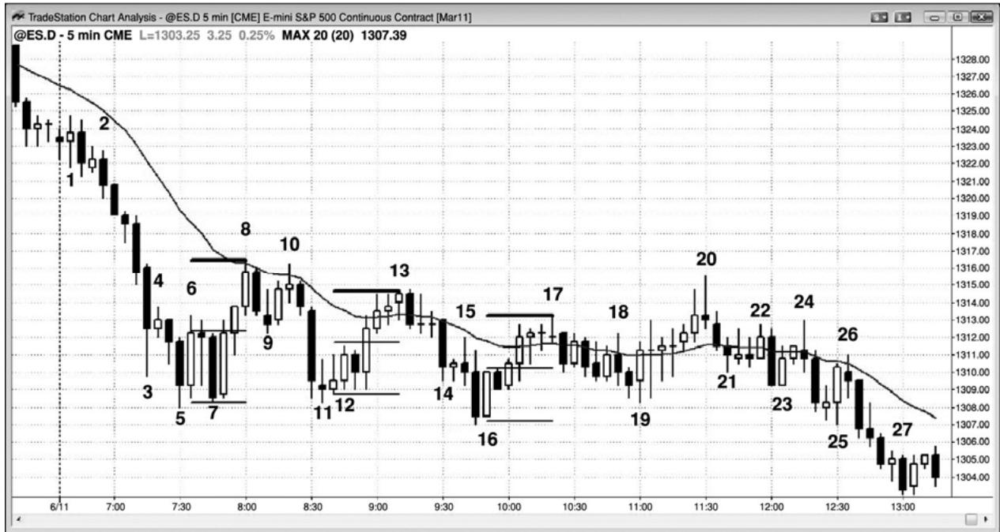
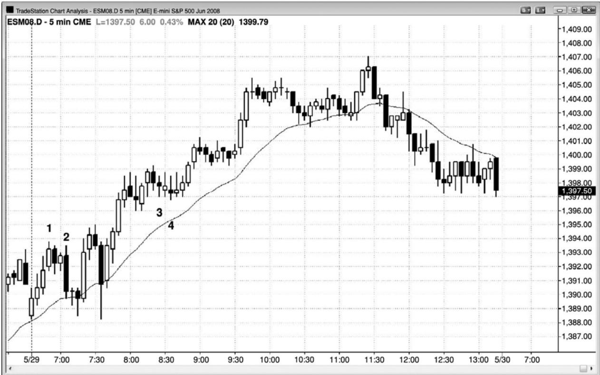
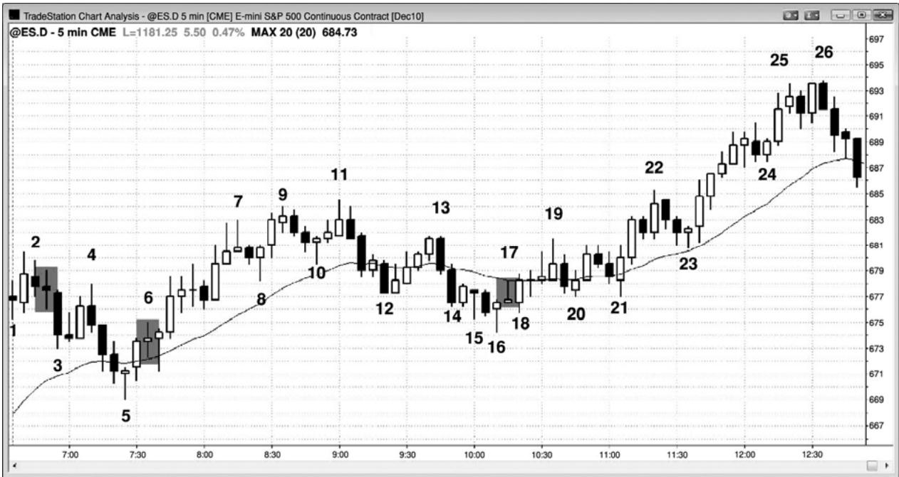

第29章 保护性止损和跟踪止损¶
第 29 章 保护性止损和跟踪止损
由于大部分交易至多只有 60%的确定性，所以你必须始终为在另外 40%的时间里交易不按预期方向发展而做好计划。当某个枪手站在30码外向你射击时，尽管他只有40%的机会打中，但是你不应无视他的存在，同样，在交易中你也不应忽视那 40%的败率。40%是非常现实、非常危险的，因此，对于看法与你相对的交易者，要保持尊重。你的计划的最重要的部分，是在市场中设好保护性止损，以防市场向不利方向运动。最好使止损有效，因为对于很多使用心理止损的交易者来说，当最需要止损时，他们会找到太多理由来忽略止损，几乎总是会让小的亏损越长越大。设定的止损的方法有多种，任何一种都可以。最重要的考虑是你要使止损在市场中保持有效状态，而不仅仅是在你的头脑中。
止损主要有两类，一类是资金止损，即你的风险是一定数量的跳动数或美元数，另一类是价格行为止损，即市场超出特定的价格棒线或价位时，你就离场。很多交易者两种都用，或只选其一，具体要视市场环境而定。举例说明，在电子迷你中，如果一位交易者在大部分交易上的止损都是两点，那么当棒线很长时，他可能使用 3 点的止损。刚刚做多的价格行为交易者，可能在一开始会把保护性卖出止损设在信号棒低点下方 1 个跳动处。但是，如果信号棒异常大，比如有 6 点高，那么她要么可能交易少得多的合约，要么切换到资金管理止损，使用大约 3 点的止损。总之，大部分时间或所有时间都使用一种方法是最好的，因为那样就会使止损成为交易过程中例行公事的部分，一进入交易，你就会设好止损。这样，你就不会因考虑不同情况下使用不同类型或规模的止损而分神，而只需专心于决定是否交易。
对于大多数小的刮头皮交易，交易者们不希望看到任何回撤，只要一出现回撤，他们就立刻离场。不过，如果他们认为市场已经进入一条趋势型通道，那么他们通常会允许形成小的回撤。举例说明，如果当天是一个交易区间日，市场刚刚形成一个上涨尖峰，离开了区间低点，现在可能正形成小型多头通道，可能会测试区间顶部，那么做多交易者的利润目标将受到限制，所以那笔交易是刮头皮。由于市场处于多头通道内，所以市场很可能形成回撤，也就是说棒线可能跌至前一棒低点下方几个跳动处，但是却不会跌破通道中最近的波段低点。由于交易者推测市场可能进入一条通道，而且他仍然做多，所以他必须愿意持有头寸，经历那些回撤，使保护性止损保持在通道中最近的波段低点下方。激进型的老手甚至可能在前一棒的低点下方使用限价单加仓，因为他们知道，通道一般会出现一两棒的回撤，然后又继续上涨。
如果交易者们正在入场多头波段交易，那么他们是预期形成一轮多头趋势。由于多头趋势是一系列的更高高点和更高低点，所以在市场创出新的波段高点后，把保护性止损移至最近的波段低点下方是合理的。这被称为跟踪止损。如果市场上涨 5 棒或 10 棒，回撤至入场价位下方，又上涨至一个新的波段高点，那么交易者们将不希望市场再跌破那波回撤的低点，他们会将自己的保护性止损移动至回撤低点下方 1 个跳动处。很多交易者不希望他们的止损被二度测试，他们会将止损移至盈亏平衡点。
一旦交易者们看到市场即将突破进入趋势型交易区间日，当市场开始形成第二个交易区间时，他们就必须准备改变自己的交易风格。举例说明，如果一波多头突破持续了几棒之后出现一个单棒回撤，然后又形成较弱的反弹，那么那条回撤棒的低点或许将成为上侧交易区间的低点。由于市场通常会返回测试突破缺口，并且常常会测试下侧交易区间的顶部，所以很可能会跌破那条多头棒的低点。所以，多头不应把止损跟踪调整至那个低点下方，因为那样将令他们被止损踢出。如果他们正考虑把保护性止损设在那里，那么在下一几棒内出现的多头趋势棒收盘离场将更为合理，那样他们就可以在形成中的交易区间的顶部附近获利了结，而不是在其底部获利了结。一旦市场形成交易区间，那么交易者就不应仍然采用强趋势中的方式交易。
有的交易者将允许回撤超出信号棒，前提是他们认为自己对波段交易的预测仍然正确。举例说明，如果他们在多头趋势中的高点 2 回撤买进，而且信号棒的高度约为两点，那么即便市场跌破那条信号棒的低点，他们可能仍然愿意持有自己的头寸，认为那一波回撤可能演变为高点 3 架构，一个楔形多头旗形买进架构。别的交易者会在市场跌破信号棒时离场，然后在强高点 3 买进信号形成后再次买进。有人甚至会买进两倍于初始头寸的头寸，因为他们认为强二次信号更加可靠。这些交易者中有很多人会在高点 2 买进信号出现时只买进一半的头寸，如果他们认为那个信号看起来不怎么恰当的话。他们考虑到高点 2 可能失败、演变为楔形多头旗形，一种看起来更强的架构。如果那种情况发生，那么他们就可以舒服地使用正常的全规模头寸交易。
P271
在看到有问题的信号时，别的交易者会交易一半的头寸，如果保护性止损被击中，他们就离场，如果信号很强的话，那么他们就会在第二个信号全规模入场。在交易向不利方向发展时逐步加仓的交易者们，显然没有把信号棒极点用作初始保护性止损，而且很多人准备逐步加仓的位置，刚好是其他交易者在保护性止损处被踢出的位置。有人只是使用很宽的止损。举例说明，当电子迷你中的平均日区间小于 15 点时，趋势中的回撤很少会超过 7 点。有些交易者认为，除非市场跌幅超过平均日区间的 50%到 70%，否则趋势仍然在起作用。只要回撤在他们所能容忍的范围内，他们就坚持持有，认为他们之前的预测是正确的。如果他们在多头趋势中的回撤买进，他们的入场点低于当日高点 3 点，那么他们可能会冒 5 点的风险。因为他们相信原来的趋势仍然有效，所以他们认为等距运动的几率为 60%或更高。意思是说，他们至少 60%地确定，市场在下跌 5 点至他们的保护性止损前，至少会上涨 5 点，这就产生了一个可获利的交易者方程。如果他们最初在多头回撤中的买进信号出现在高点下方 5 点处，那么他们可能只冒 3 点的风险，他们可能会在市场测试那个高点时离场。由于回撤幅度相对较大，所以趋势可能有一点疲弱，这可能使他们在市场测试趋势高点时获利了结。他们设法赚取至少与所冒风险相当的利润，但是，如果他们担心市场可能进入交易区间，或者甚至反转进入空头趋势，那么他们可能愿意在原来高点下方离场。
一旦市场最后开始进入交易区间，交易者们就至少应该准备在区间高点附近部分获利了结，而不是依赖自己的跟踪止损。这是因为，市场很可能开始形成回撤，跌破先前的波段低点。一旦交易者认为自己的止损很可能被击中，那么合理的做法就是在被击中前离场，尤其是在自己的大部分利润目标已经实现时。
对于大部分交易者来说，在入场棒收盘前，初始价格行为止损位于超出信号棒 1 个跳动处，如果入场棒很强，那么就把止损调紧至超出入场棒一两个跳动的位置。如果入场棒是一个十字星，那么就仍然使用初始止损。记住，十字星是单棒交易区间，如果你刚刚买进，而且认为它处于多头趋势中，那么不要希望在交易区间下方离场（卖出）（或者，如果你刚刚做空，那么不要希望在新空头趋势中的交易区间的上方回补）。
实际上，在可能形成的新多头趋势中，老手们可以考虑在小十字星入场棒下方一两个跳动处加仓（如果是在新空头趋势中，那么可以考虑在十字星入场棒上方加仓），对于增加的合约，将以初始止损位为止损。他们是在低点 1 做空信号下方买进，因为他们认为市场正在上涨，而非下跌。低点 1 是空头趋势中强空头尖峰底部，或交易区间顶部附近的做空架构（在交易区间中，最好等待在低点 2 做空），而不是交易区间底部或新多头趋势底部的做空架构。由于这里的下跌很可能失败，所以与设在低点 1 信号 棒下方的获利了结限价单相比，两点的保护性买进止损更可能被击中。也就是说，在低点 1 信号棒下方买进之后，市场可能在下跌6 个跳动前至少上涨两点。由于交易者们认为这是一轮新的多头趋势，或者至少是一段交易区间，所以他们认为市场至少将上涨3点或4点，因此这是一个合乎逻辑的做多架构。
如果它是反向的一棒，那么你就不得不做出决定。举例说明，比如说你刚刚在一轮强多头市场中的回撤买进，而且信号棒是朝向均线的一波两条 腿回撤的终点的一条强多头反转棒。如果入场棒成为一条空头反转棒，那么你通常应该保持保护性止损位于信号棒下方不动。但是，如果你正在强空头趋势中一个向上反转架构买进，那么如果市场跌破那条空头入场棒，你通常应该离场。有些情况下，如果背景合适，你甚至应该反转做空。总之，如果你认为失败的做多架构将会成为做空架构，那么你不应在强空头趋势中买进。在这种情况下，很少有交易者能够反转，如果空头趋势仍然足够强劲，而且在低点 1 架构做空仍然合理，那么空头趋势可能太强，不应准备做多。反之，多头应该等待强劲的反弹，然后准备在更高低点回撤买进。在空头趋势中，如果仍然没有证据表明多头能够控制市场，那么做多就是一种失败的策略。由于大部分多头反转都会成为空头旗形，所以做空比做多要好得多，除非反转架构特别强（这将在第三本书中关于趋势反转的一章中讨论）。
无论哪笔交易，如果入场棒太长，那么较为明智的做法是使用资金管理止损，比如在电子迷你5分钟图中使用8个跳动的止损，或者70%左右的回撤（超出斐波那契62%回撤几个跳动）。举例说明，当在一条很长的多头信号棒后入场做多时，可以把保护性止损设在从信号棒底部到入场点之间的下部 30%处。资金管理止损的大小与棒线的长度成正比。当市场到达第一个利润目标，部分利润落袋之后，把保护性止损移至盈亏平衡点（即入场点，距信号棒极点 1 个跳动）上方。最好的交易不会击中盈亏平衡止损，而且在 5 分钟电子迷你中，很少曾经超出入场点 4 个跳动（例如比做多后的信号棒高点低 3 个跳动）。
如果由于一条大而强的反转棒和其他因素的影响，你对于反转非常自信，那么你可以使用超出那条大型信号棒的止损，容许回撤后出现回撤，只要市场不击中你的止损就可以。你甚至可能使用超出信号棒几点的止损，但是如果那样做，就要计算好自己的风险，并且产婆头寸规模，以便使所冒风险与其他交易相同。另外，如果你自信地认为反转很强，很可能形成两条腿，那么在你以刮头皮交易部分离场后，如果市场折返并穿过你的初始入场价位几个跳动，那么你就可以在回撤中继续持有，并且依靠初始止损，尽管已经浮亏几个跳动。否则（比如在新的多头趋势中），你就要在盈亏平衡点退出波段头寸，然后在触发你的止损的那一棒高点上方再次买进，放弃你曾认为很可能形成的第二条腿的几点或更多。
P272
如果你正在一波平静的回撤中入场，而且你认为它即将结束，而且回撤中的棒线较小，那么你可能考虑使用正常的资金管理止损，即便那意味着你所冒的风险要超出信号棒几个跳动。举例说明，如果当天是一个空头趋势日，一条低动能的多头通道上涨至均线，形成一个低点 4 做空架构，信号棒是一个 3 个跳动高的十字星，那么对于认为回撤即将结束的交易者们来说，他们可能会冒与平常一样的 8 个跳动的止损，尽管那样的话止损将高出信号棒 4 个跳动。低点 4 架构常常形成于紧凑通道内，入场是对紧凑通道的向下突破。紧凑通道突破常常会形成回撤，有时，回撤会超越信号棒。此时，形成一个更高高点突破回撤也毫不令人奇怪。只要交易者们认为自己最初的预期仍然正确，他们就会给交易留出一些空间。或者，如果市场向上超越入场棒或信号棒，那么他们就会离场，然后当市场再次向下反转时重新做空；但是，如果他们对自己的分析非常自信，那么他们可以依靠自己最初 8 个跳动的止损，容许形成更高高点回撤。总之，如果你正处于一笔亏损交易中，那么就自问一下，如果现在没有入场，那么是否会选择那笔交易。如果答案是否定的，那么就离场。如果你的预期不再正确，那么就离场，甚至是认赔离场。
当你担心市场可能变得大幅震荡而且形成大型棒线时，你应该只交易正常头寸规模的一部分。将自己的头寸规模减半，或者降低至四分之一，然后下单。如果你正在买进，而且自信地认为某个低点不会被跌破，但是做多交易需要的止损比通常情况下所用的资金管理止损要大很多，那么就可以使用那个较大的止损，然后等待。如果市场在没有回撤的情况下击中你的利润目标，那么就获利了结。但是，如果市场只上涨了 1 个跳动左右就几乎回撤至你的止损，然后再次上涨超越你的入场点，那么就调高你的利润目标。作为一条一般性规则，市场上涨的幅度足以等于你需要待在交易中所使用的止损规模。于是，如果市场在向上反转前跌至你的入场点下方 11 个跳动处，那么只要 12 个跳动的止损便可以；因此，市场很可能会上涨至你的入场点上方约 12 个跳动或更高价位。在那个目标下方一两个跳动处设定止损单获利了结，将是比较明智的，当市场靠近那个目标时，把你的止损移至盈亏平衡点，静观自己的利润目标订单是否会被执行。举例说明，假定回撤是 11 个跳动，你超出信号棒的止损未被击中（或许是 12 个跳动，甚至 18 个跳动），现在市场再次向你的方向运动；计算你为了避免被止损踢出而必须承担的风险有多少个跳动。此时，你将必须承担12个跳动的风险（超出回撤 1 个跳动）。现在，增加你的利润目标，使它比那一风险少一两个跳动，即 11 个跳动左右。此时，你还应把保护性止损移至超出那一回撤 1 个跳动处，于是你现在所冒的风险为 12 个跳动。
在获得一笔刮头皮交易的利润前，如果保护性止损被击中，那么你就被套入一笔糟糕的交易，所以在止损处反转头寸有时是一种不错的策略。这要取决于当时的背景。举例说明，当你认为市场正在反转进入一轮多头趋势时，失败的低点 2 做空架构，将是反转做多的一个好机会。然而，紧凑交易区间内的止损猎杀却不是反转。在考虑做反向交易之前，花些时间确认一下自己是否正确地解读了图表。如果你没有时间立即入场，那么就等待下一个架构，那通常在不久后就会出现。
在分析市场之后，你就会看到合理的止损在哪里。对于电子迷你 5 分钟图，当平均日区间为 10\~15 点时，8 个跳动的止损在大多数交易日都是适用的。然而，在第一个小时，要仔细观察所需的最大止损，因为它常常成为当天剩余时间里最好的止损。如果止损超过 8 个跳动，那么你很可能需要同时加大利润目标。然而，这至多会提供一个普通的优势，除非棒线特别长。
有两种常见架构通常需要较大的止损，也就意味着要交易较小的头寸。两种架构都需要在趋势的强尖峰的收盘附近入场，但是交易方向刚好相反。当趋势起点出现强尖峰，而且形成几条连续的趋势棒时，交易者们将在那些棒线形成时，以及它们收盘时在趋势方向上入场。举例说明，如果出现一个强多头突破，由两条大型多头趋势棒构成，那么多头将在第二棒收盘和它的高点上方买进。如果随后形成第三条、第四条和第五条连续的多头趋势棒，那么多头将随着多头尖峰的增长而继续买进。他们的所有交易的理论止损都在尖峰的底部下方，那是相当远的。如果交易者们用作他们的止损，那么他们需要交易非常小的头寸规模，以便使风险保持在他们的舒适区内。实际上，对于大部分交易者来说，当在尖峰末期入场时，他们会考虑使用较大的头寸和较小的止损做刮头皮交易。这是因为形成回撤的可能性变得更高，如果形成回撤，那么他们就可以在较低价位使用较小的止损入场一笔波段交易，比如在信号棒的下方。
第二种情况是，当交易者们正在一条大型趋势棒内入场时，如果正在逆势入场，那么就需要较大的止损。举例说明，如果在没有明显回撤的情况下出现第三波连续的卖出高潮，而且第三波高潮拥有当天最长的空头趋势棒，并且收盘价接近棒线的最低价，那么激进的多头将在那一棒的收盘买进，预期空头波段即将见底；他们也预期随后将形成强势反弹。在这种情况下，保护性止损放在哪里较为可靠永远是不确定的，但是作为一条指导性规则，由于交易者们预期反弹至少会到达大型空头趋势棒的高点，所以他们对于那笔交易有60%的确定性，他们所承担的风险应该至少与那条空头趋势棒所拥有的跳动处相当。这将在第三本书中关于高潮的一章中进一步讨论。如果他们是经验非常丰富的交易者，那么这可能是一笔可靠的交易。在这些情况下，成交量常常非常巨大，也就是说机构也正在重仓买进。空头正在将自己的空头头寸获利了结，多头正在积极买进。双方常常会等待出现一条进入支撑区的大型空头趋势棒，作为耗尽的征兆，然后重仓买进。因为他们正预期市场很快就要见底，所以他们在支撑区上方停止买进，静观市场下跌，这将制造一个卖出真空，表现为大型空头趋势棒。
P273
还有其他一些特殊情况，交易者可能要使用非常宽的止损。我有一个朋友，他寻找疲弱的通道，并且在与通道相反的方向上逐步加仓，预期出现反转。举例说明，如果市场处于一个多头尖峰之后的一条多头通道内，而且通道不是特别强，那么他会在通道中前一波段高点处下单做空，头寸规模为正常情况下的四分之一，如果通道继续，就在接下来的两三个波段高点加仓。在电子迷你中，当平均日区间为 10 到 15 点时，他的最后止损约距首次入场点 8点，他的目标是市场测试他的首个入场点。一旦反转开始，如果他认为反转很强，那么他常常会把初始入场点下方的部分头寸波段化。
在台阶形态中，或者在趋势型交易区间日，当交易者们在突破处做反向交易时，他们可以使用宽松的止损。在电子迷你中，如果平均区间约为 10 到 15 点，而且出现一个幅度约为5 点的突破，那么交易者可能反突破而交易，大约是以 5 点的风险去博取 5 点的利润，预期市场会测试突破点。典型情况下，这种交易的成功率超过 60%，所以拥有正的交易者方程。
有时，当大型趋势终点处的单棒最终旗形被突破时，交易者们会做反向交易，预期那条趋势棒成为一波耗尽型高潮（这将在第三本书中关于高潮反转的一章中讨论）。举例说明，如果有一轮多头趋势，已经持续了 30 棒左右，期间只有很小的回撤，然后出现一条大型多头趋势棒，之后是一波持续一两棒的回撤，那么，如果下一棒也是一条大型多头趋势棒，多头和空头将会在它的收盘卖出。多头卖出获利，激进型空头卖出，新建空头头寸。空头所冒风险约等于那一棒的高度（如果那一棒的高度为 10 个跳动，那么他们将使用 10 个跳动左右的止损），他们的初始利润目标将是测试那一棒的底部。下一目标是下跌测量运动的终点。
我的另一个朋友，当在电子迷你中的回撤入场时，他习惯使用 5 点的止损。他感觉自己不能始终如一地预测回撤的终点，相反地，他将在自己认为趋势正在恢复时入场。他只是认为自己有时入场稍早，在趋势恢复之前，回撤可能还要小幅延续，宽松的止损将允许他待在交易之中。他的利润目标是对趋势极点的测试，可能距入场价位 3 到 5 点。如果恢复运动很强，那么他将把交易波段化，寻求 5 点或更高的利润。对于这种方法，虽然存在多个变种，但平均风险一般约等于平均回报，而且由于是顺势策略，所以胜率至少是 60%。也就是说这种策略拥有正的交易者方程。
每当交易者使用宽松的止损时，只要市场一开始向他们的方向运动，他们通常就能够把止损调紧，从而极大地降低风险。一旦一笔波段交易到达约利润目标的一半，很多交易者就会把他们的保护性止损移至盈亏平衡点。如果市场向他们的方向强势运动，胜率增加，潜在回报可能保持不变，他们也可能加大利润目标，而风险变得较低。这使得交易者方程变得更为有利，这也是很多交易者宁愿等待市场能够到达这一点时入场的原因。但是，如果反转形态非常弱，虽然交易者可以调紧他们的止损，降低他们的风险，但是他们的胜率将会更低，他们也可能同时减小利润目标（调紧他们的获利了结限价单）。如果交易者方程足够弱，那么他们可能会在获得小额利润后以刮头皮交易离场，等待另一个交易机会。
（交易的）目的是赚钱，那需要一个正的交易者方程。如果棒线很长，需要宽松的止损，那么你就必须使用宽松的止损，但是你同时也必须调整你的利润目标，以便使交易者方程始
终大于零。你还应该减小自己的头寸规模。
在大型市场中，可能有一百家机构在积极交易，每家机构的成交量约占总成交量的 1%。对于另外 99%的成交量，只有 5%来自私人交易者。机构正努力从其他机构身上赚钱，因为其他机构点到了市场的 94%，而私人交易者们只占 5%。机构可以对我们漠不关心，也不会有意去猎杀我们的止损，吞食我们这些小家伙。虽然你的止损可能被击中，但是市场的运动与你毫不相干。举例说明，如果你已经做多，然后你的保护性止损被击中，那么你应该认为，那是因为至少有一家机构也希望在那一价位卖出。只有很少的情况下，足够的小型玩家做出相同的操作，提供足够的成交量，吸引某一家机构，所以最好认为只有一家机构愿意在那里卖出，同时另一家机构愿意在那里买进时，市场才会在那里交易。

在图29.1中，初始止损只比信号棒超出1个跳动。一旦入场棒收盘，如果入场棒很强的话，就把止损移至超出入场棒 1 个跳动处。如果风险太高，那么就使用资金管理止损，或者以信号棒高度的60%作为止损。
如果你在棒1向下突破那条空头内包棒时做空，那么初始止损将位于那条信号棒的上方。
入场之后，棒 1 入场棒立即向上反转，但是没有超越信号棒的顶部，所以这最终成为一笔可获利的空头刮头皮交易。一旦那条入场棒收盘，如果它是一条多头趋势棒或空头趋势棒，而不是一条十字星棒，那么就把止损移至它的高点上方 1 个跳动处。在这个例子中，信号棒和入场棒的高点位于同一价位，所以不必将止损调紧。
棒 3 前一棒是一条多头反转棒，形成于开盘起三次下推之后。虽然在紧凑空头通道被首次突破时买进，通常不是一笔好交易，但第一小时内的反转通常是可靠的，特别是当前一天拥有一个很强的收盘时（观察一下昨天收盘前均线陡峭的斜率）。棒 3 入场棒立即下跌，但是没有跌破信号棒的低点，也没有跌破信号棒高度的 70%（如果你使用资金管理止损，认为这条信号棒太长，不能使用位于低点下方的价格行为止损）。一旦入场棒收盘，保护性止损就应被向上移至它的低点下方 1 个跳动处。如果市场跌破它的低点，那么很多交易者就会做空，因为这是一个突破回撤做空架构。但是，由于这不是一个强空头尖峰，所以它不是一个可靠的低点 1 做空架构。或者，交易者可以使止损一直位于信号棒下方，但是当在强空头趋势中抄底时，如果市场跌破一条强空头趋势棒（一条低点 1 空头信号棒），那么持有多头是非常冒险的。
一棒之后，出现一条回撤棒，但是没有击中止损。它精确地测试了入场棒低点，形成一个双重底。由于这个楔形底很可能形成两条上涨腿，所以对于老手来说，持有多头头寸经历入场一棒后形成的回撤，继续依靠入场棒下方的止损，仍然是合理的。否则，你就可能被 7个跳动的止损踢出，然后在回撤棒高点上方再次买进，捕捉第二条腿；你的入场点将比初次入场差3个跳动，所以总的来说差了10 个跳动。
在棒 4 处向均线的回撤，与棒 1 区域形成一个双重顶，那是一个小型楔形空头旗形。另有交易者可能会简单地把它看作均线处的一个低点 2。棒 4 处低点 2 做空架构的初始保护性止损未被击中，尽管入场一棒后出现一条回撤棒。止损位于信号棒上方，你不应把止损调紧至最近一棒的高点上方，除非市场已经向你的方向运动了 4 个跳动左右，或者市场已经形成一个强度适中的空头实体。给那笔交易一些时间，让它完成。另外，当入场棒是一个十字星时，允许出现一两个跳动的回撤，通常是安全的。十字星棒是一种单棒交易区间，在交易区间上方买进是危险的，所以不要在那里买回你的空头头寸。依靠你的初始止损，直到市场已经至少向你的方向运动了7个跳动。
多头棒棒 5 立即下跌测试信号棒低点（这一点在 1 分钟图上非常明显，但是没有给出），形成一个微型双重底，然后又形成一个成功的多头刮头皮架构。依靠你的止损，忽略 1 分钟图。当选择 5 分钟入场时，依靠 5 分钟止损，否则你将频繁陷入亏损之中，当你尝试每笔交易冒更低的风险时，常常会在大量交易中被止损踢出
P275
棒 7 是一个强多头尖峰之后的高点 2 做多架构。市场测试信号棒下方的止损，那是差了1 个跳动，然后又测试入场棒下方调紧后的止损，但是也未击中。入场之前的十字星增加了交易的风险，但是市场在从当日低点暴涨之后，已经有 6 棒的收盘位于均线上方，所以这是一个可接受的做多架构，因为你不得不预期形成第二条上涨腿。
棒 8ii 形成是一个高点 1 买进架构。但是，它并非出现于强多头趋势中强多头尖峰的顶部，所以它不是一个好的交易机会。实际上，它位于从当日低点开始的上涨尖峰之后的一条多头通道的顶部；它位于一个向上的测量运动目标附近，可能会与棒 4 形成一个双重顶。由于大部分交易区间突破尝试会失败，所以有 60%的可能性市场会下跌，而只有 40%的可能性突破会成功。不可能确切地知道胜率是多少，但是当谈到交易区间突破尝试时，60-40 是一个很好经验法则。激进型交易者们可能会在那个ii形成的高点上方使用限价单做空，预期它成为一个做多陷阱。相反地，如果交易者在棒 8 ii 形态上方买进，保护性止损将在入场棒被击中；这可能成为一个很好的反转，就像大多数失败的ii形成一样。
如果你在这个趋势型交易区间日的顶部附近的波段高点棒11做空，那么你可能会在测试均线的反转棒棒 12 反转做多，或者在棒 11 做空架构之后的入场棒上方 1 个跳动处使用买进止损单做多。
波段高点棒 13 处的低点 2 做空架构形成一个五跳动失败，成为一个失败的低点 2。你应该在入场棒（信号棒棒 13 的后一棒）上方 1 个跳动处在棒 14 反转做多，因为那里有被套的空头，而且你应该预期至少会再形成两条上涨腿。如果你没有在那里买进，那么应该在棒 14后一棒买进，因为棒 14 是一个双重向上反转，是可能的多头趋势中均线上方的一个高点 2 买进信号。每当交易者正在摸顶时，如果看到均线处形成一个高点 2 买进信号，信号棒是一条多头棒，那么他们总是应该退出空头交易，并且反转做多。如果他们之前没有做空，那么他们就应该做多。这不是一个好的做空架构，因为这可能是市场在大型楔形多头旗形突破之后形成一波回撤。两棒之前的强多头趋势棒是突破，三次下推开始于棒 7 附近棒线（三棒之前是一个不错的选择），然后是棒 9 和棒 10 前一棒。截止棒 8 的上涨向上突破了头几个小时形成的空头通道，棒 10 是向上突破空头趋势线后进入更高低点的一个二次入场。有些交易者在棒 10 买进，因为他们把这看作一个头肩底。另有交易者在低点 2 棒 13 下方使用限价单买进，因为他们把这看作一轮多头趋势，而不是一段交易区间，多头趋势中的低点 2 是一个买进架构。低点 2 仅在交易区间或空头趋势中才是一种做空架构。当市场处于多头阶段时，交易者们把低点 2 看作做空陷阱，将在低点 2 下方买进，预期市场向上反转。相反地，有些交易者会在低点2入场棒上方1个跳动处使用止损单买进，等待低点2的失败得到确认。
从棒 12 开始把多头交易波段化的交易者，当市场运动至一个新的高点之后，会把止损跟踪调整至最近的波段低点下方 1 个跳动处。因此，一旦市场上涨超越波段高点棒 13，交易者就可能把保护性止损上移至更高低点棒 14 下方。

在强多头趋势中，在市场刚刚创出一个新的波段高点之后，交易者们就常常会把自己的保护性止损跟踪调整至最近的波段低点下方。一旦市场看起来将要进入交易区间，交易者们就应该部分获利了结，并且考虑做利润较小的刮头皮。
P276
如图29.2所示，今天第一棒向上大幅跳空，而且形成一条强多头趋势棒，所以很可能成为一个开盘起多头趋势日。如果交易者们在棒 2 或棒 4 上方买进，那么当棒 5 刚刚超越棒 3处的最近波段高点时，他们就会开始把保护性止损跟踪调整。截止棒 5 的三棒多头尖峰，令大部分交易者认为总在场内方向是看涨的，而且上行动能很强，于是很多交易者希望让自己的利润自由奔跑。一旦棒 7 向上超越棒 5，他们就可能把保护性止损调紧至棒 6 下方 1 个跳动处，当市场向上超越棒9时，他们就可能把止损上调至棒10下方1个跳动处。
交易者们知道，在某个点处市场通常会出现更大幅度的回撤，因此，当他们认为即将形成较为复杂的回撤时，很多人就会部分或全部获利了结。测量运动目标常常可以提示我们机构可能在何处获利了结，也就意味着回撤将从何处开始。由于最初的强多头尖峰开始于棒4，结束于棒 8，所以从那里开始的一波上涨测量运动的目标，就很可能是获利了结的价位。从棒 10 到棒 19 的上涨也包含 3 条腿，而 3 条腿运动是楔形的一个变种（即便像这样处于陡峭的通道内），之后可能出现较大幅度的回撤。首个目标就是均线。棒 18 是一条大型多头趋势棒，随后是又一条大型多头趋势棒，这波双棒买进高潮形成于一轮延长的趋势之后。当这种情况发生时，市场常常会调整至少 10 棒和两条腿，尤其是当它离均线较远时，比如在这里。棒棒 19 成为一条空头反转棒时，很多交易者获利了结。有些交易者认为第一次回撤之后至少再形成一个新的高点，于是他们在回撤期间继续持有。但是，棒30存在激进的获利了结行为，市场在接近当天收盘时向上超越棒19，所以在新的高点和当市场向下反转时，很多交易者在获利了结。
今天是一个非常强的多头趋势日，在向均线回撤之后，很可能会测试高点。截止棒 24 的空头通道，动能较低，棒线较短。在棒24上方买进的交易者，可能考虑依靠正常情况下8个跳动的止损，以防市场在向上突破空头通道（所有空头通道都是多头旗形）之后形成更低低点突破回撤。市场向上强势突破，但是立即形成一个大型的双棒空头反转。在强多头趋势中，当市场正在向均线回撤时，这不是一个可靠的做空架构。老手们可能会依靠他们的止损，尽管那些止损可能位于信号棒下方几个跳动处。那些止损可能不会被击中，交易者们可能会在当日高点附近退出多头头寸。交易者也可能在棒 25 双棒反转下方离场，然后在微型通道突破回撤棒 26 上方再次买进。
在截止棒 19 买进高潮的强多头趋势期间的任意点处买进的波段交易者，理论上可以使用位于最近波段低点下方的保护性止损，也就是说所冒风险要大于两点，使用宽松的止损。一旦棒 19 买进高潮形成，市场就很可能进入交易区间，交易者可能切换到交易区间型的交易，也就是说以刮头皮交易取代波段交易。由于市场正在进入交易区间，所以它很可能跌破先前的波段低点，所以继续将保护性止损设在那里不再合乎逻辑。由于交易区间正在形成，止损很可能被击中，所以交易者应该在止损被击中前退出多头头寸。敏锐型交易者会在可能正在形成的区间顶部离场，比如在棒19下方。激进型交易者可能开始在那一点做空，寻找向均线的刮头皮架构。
大部分波段交易者可能会把自己的保护性止损跟踪调整至最近的波段低点下方。有些交易者宁愿使用利润目标，而不是让波段交易自由奔跑，直到趋势结束。一旦市场已经到达利润目标的一半，那些使用利润目标作为出场依据的交易者们就会把保护性止损移至不次于盈亏平衡的位置。

P277
市场给予交易者的回报，常常与它迫使交易者承担的风险相当。一般而言，在空头趋势日中的大型信号棒上方买进是危险的，这里根据图29.3所示图表描述的交易，至多是可疑的，但它们说明了一个问题。
如果交易者们在棒 5 上方买进，认为它是第二波连续的卖出高潮和一波抛物线运动的底部，所以很可能引出一波两条腿的反弹，那么他们的初始止损将位于棒 5 低点下方。棒 7 测试那个低点，但是没有击中那些止损。然而，一旦市场向上超越棒 7，交易者们就会把他们的止损上移至棒 7 低点下方 1 个跳动处，即在入场价下方 16 个跳动处。然后，市场刚好反弹至棒 8 高点，比入场价位高出 16 个跳动（是对均线的测试，空头在均线处介入）。理解这种倾向的交易者们，可能在他们的入场点上方 15 个跳动处设定一张获利了结限价单。由于他们认为自己是在一段即将形成的小型交易区间的底部买进，所以他们认为市场形成等距上涨运动的可能性是 60%。这是一笔刚刚可以接受的交易。
相同的事情再次发生在棒 12 和棒 16 强多头趋势棒上方的多头交易中。一旦出现回撤，然后反转上涨，交易者们就看到市场迫使他们承担的风险有多大，他们可能会在比那个风险小 1 个跳动处设定一张获利了结限价单。
对于在棒 2 至棒 3 的空头尖峰中的某个点做空的交易者，如果计划将交易波段化，那么可能使用一个宽松的保护性止损，可能是在那个尖峰的上方。大部分交易者所冒的风险可能比那个风险低，但是也差不多是刮头皮交易中所冒风险的两到三倍。
在棒 16，假定一位多头在第三次下推后的向上反转中买进，预期形成一个最终旗形趋势反转。由于从棒 13 开始的下跌通道非常紧凑，所以，如果交易者能够等到强突破出现，然后在强尖峰或随后的回撤买进，那么成功率就会高一些。不过，为了便于说明，假定交易者就在棒 16 上方买进。他可能认为市场有 50%的可能性向上突破棒 13 高点，然后形成一波向上的测量运动，使它的回报远大于风险，他的止损位于棒16买进信号棒下方。然而，他可能担心在截止十字星棒17的上涨运动中多头缺乏紧迫感，认为他之前的预期已经改变。他可能更倾向于认为市场只是在形成空头通道中的又一个更低低点，而不是趋势反转，于是仅仅以刮头皮交易退出它的多头头寸。如果他认为市场正在到达顶部，那么对于他来说，继续持有多头头寸就毫无道理可言。如果他认为市场可能形成第二条上涨腿，而不是击中盈亏平衡止损，那么他可能将自己的保护性止损移至盈亏平衡点。如果他认为市场可能跌破他的入场价位，但是仍然保持在信号棒低点上方，并且形成一个更高低点，那么他可能继续使用原来的止损，或者先退出，然后在向更高低点突破回撤时买进。交易者们不断做出这些决策，他们越擅长于制定这些决策，就越能够赚钱。如果他们总是坚持自己最初的预期，甚至当市场正在向与预期不同的方向运动时，他们仍然坚持不变，那么他们在交易中赚钱之前就要经历一段痛苦的时光。他们的工作是跟随市场，如果市场运动的方向不是他们认为的那样，那么他们应该离场，并且寻找另一个交易机会。
波段交易者们容许形成回撤，耐心等待调紧他们的止损，直到趋势开始。如果一位波段交易者在棒 20 下方做空，预期它是对交易区间顶部的测试，将引起开盘起空头趋势的恢复，那么他可能会寻求至少为风险两倍的回报。一旦他看到那条强空头入场棒，他可能就会调紧止损至它的高点上方，或者保持在棒 20 信号棒高点上方不动，直到市场从棒 24 双重顶向下反转。那条信号棒的高度为 3 点（12 个跳动），所以他的初始风险是 14 个跳动。如果他的利润目标是风险的两倍，那么他将准备在入场点下方 28 个跳动处获利了结，即在 1,305.25，他的获利了结限价单将在棒27前倒数第二棒被执行。棒24超出棒23前的强空头趋势棒1个跳动，把没有耐心的弱势空头套出，但是它没有超越入场棒或信号棒。

P278
市场上涨超越昨日高点，然后向下反转，如图 29.4 所示。在棒 1 下方做空的交易者，可能会把初始保护性止损设在棒 1 上方。市场在棒 2 向下反转之后，他们计算出市场在向他们的方向运动前，将向相反方向运动 8 个跳动。也就是说，如果他们想待在交易中，那么不得不承担的最小保护性止损就是 9 个跳动，在当天剩余时间里，他们可能会记住那个止损幅度。
如果你在棒 3 处失败的低点 2 买进，并且将初始止损设在信号棒低点下方 1 个跳动处，那么你可能要承担 8 个跳动的风险。单跳动止损猎杀很常见，而且你可能已经知道当天早些时间需要使用 9 个跳动的止损，所以明智的做法可能是多承担 1 个跳动的风险。这不是一笔很棒的多头交易，因为它形成于一个微型突破之后，而且前 7 棒基本横盘。二次入场可能会更好。棒 4 是一个高点 2 买进架构，1 棒以后的多头内包棒是一个突破回撤买进架构（内包棒是高点多头突破之后的回撤）；两个都是更强的架构。
一旦棒线变得越来越小，你就可以调整止损规模，使它适合当前的市场环境。但是，当天晚些时候，常常需要更大的止损。不要担心你的止损被击中而造成亏损。与一天中不断调整止损、目标和头寸规模，最终错过交易或犯错相比，使用较为固定的止损通常更轻松。

P279
入场几棒之内，如果形成了小十字星棒，那么不要过早地调紧保护性止损。十字星是单棒交易区间，市场常常会反转并超越它们一两个跳动。当你的预期仍然非常准确时，你不希望被止损踢出。
如果交易者们在棒 2 下方做空，看到他们的入场棒变成了一个十字星，那么他们应该继续将保护性止损设在信号棒高点上方，直到市场向他们的方向形成一波很强的运动。他们可能在棒 3 暴跌中部分刮头皮出场，如果他们认均线陡峭，有形成反弹的风险，那么他们可能把保护性止损调紧至盈亏平衡点，或者调紧至棒 3 上方 1 棒。如果他们真的调紧了止损，那么他们可能在棒 4 被止损踢出，但之前的决策仍然是合理的。然而，在一个大型上涨缺口日，当出现一波向均线靠近的回撤时，常常会形成第二条下跌腿，进一步测试均线；这常常形成当日低点，比如这里在棒5。
如果交易者们在均线缺口棒、高点 2 和楔形多头旗形测试棒 5 上方买进，那么一旦入场棒收盘，而且成为一条明确的强多头趋势棒，那么他们可能把交易的波段部分的保护性止损移至盈亏平衡点。他们可能不会在十字星棒 6 低点下方离场。
如果他们在多头反转棒棒16上方买进，认为它是一个高点2做多架构，或者是一个楔形多头旗形（其中棒 8 或棒 10 形成第一次下推），那么在入场棒成为一个十字星之后，他们可能不会调紧自己的止损。但是，一旦棒 18 成为一条强多头趋势棒，他们就应该把自己的止损移至它的低点下方。